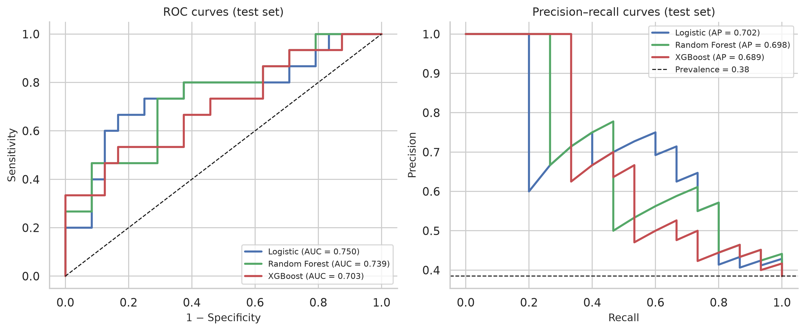

溃疡性结肠炎“健康—疾病—复发”临界态
参与国家自然科学基金重大专项，利用多器官蛋白质组学刻画溃疡性结肠炎不同阶段的动态变化，揭示其肠外系统性响应机制。
硕士研究生 · 蛋白质组学与空间组学
我是杨济丞，中国中医科学院医学实验中心硕士研究生，师从杨洪军研究员。我使用蛋白质组学、空间组学、质谱成像与机器学习，研究中药在急性肝损伤、急性肺损伤、溃疡性结肠炎与心力衰竭中的作用机制，并寻找可验证的血液标志物。
我的工作横跨样本前处理、质谱采集、组学数据分析与靶向验证，关注如何把高通量发现转化为可重复的机制与标志物。
我目前在中国中医科学院医学实验中心攻读硕士学位，导师为杨洪军研究员。此前在天津中医药大学中药学院完成本科训练，获得中药学学士学位。
研究上，我参与国家自然科学基金重大专项，围绕溃疡性结肠炎“健康—疾病—复发”临界态开展多器官蛋白质组学研究；同时负责临床血清样本的低丰度蛋白富集、蛋白质组学与机器学习建模，并通过 PRM 靶向质谱完成候选标志物验证。在中药药理方向，我构建 APAP、LPS/D-GalN 与 CCL4 诱导的肝损伤模型，结合蛋白质组、转录组与分子生物学解析铁死亡与 PPARγ/GPX4 通路。
我相信好的组学分析不止于差异列表：它需要清晰的实验设计、可复现的计算流程，以及能在独立样本中被验证的结论。这个主页记录我的研究、论文与一个完整的临床预测建模项目。
从多器官蛋白质组到空间代谢组，从机制解析到标志物验证。
参与国家自然科学基金重大专项，利用多器官蛋白质组学刻画溃疡性结肠炎不同阶段的动态变化，揭示其肠外系统性响应机制。
从临床血清样本的低丰度蛋白富集出发，结合蛋白质组学与机器学习筛选候选标志物，并通过 PRM 靶向质谱完成验证。
构建 APAP、LPS/D-GalN 与 CCL4 诱导的肝损伤模型，结合蛋白质组、转录组与分子生物学，解析菌胆平肝胶囊对 Xc−/GSH/GPX4、LPCAT3-ACSL4 与 PPARγ 通路的调控。
利用 MALDI-MSI 与空间蛋白质组学解析组织微区的脂质与蛋白分布，参与心衰心室重构及中药干预的空间机制研究。
7 篇论文，其中第一 / 共同第一作者 5 篇。作者位次按 PubMed / Crossref 收录信息核对。
Science of Traditional Chinese Medicine · 2026
通过蛋白质组与转录组分析，阐明菌胆平肝胶囊调控铁死亡、发挥对乙酰氨基酚肝损伤保护作用的核心通路。
DOI 10.1097/ST9.0000000000000136 ↗Pharmaceuticals · 2026;19(2):251
整合蛋白质组、网络药理学与深度学习，揭示菌胆平肝胶囊通过 PPARγ–GPX4 轴抑制铁死亡、逆转肝纤维化的机制。
DOI 10.3390/ph19020251 ↗Molecules · 2026;31(1):62
结合动物模型与蛋白质组学，证明凤丹牡丹花提取物通过上调多种关键蛋白修复皮肤屏障。
DOI 10.3390/molecules31010062 ↗Phenomics · accepted
整合蛋白质组、转录组与机器学习，系统揭示 PI3K–AKT 通路在急性肝损伤中的核心地位及菌胆平肝胶囊的保护作用。
Pharmaceuticals · 2025;18(10):1494
整合单细胞转录组、血液与肺组织蛋白质组，解析哈巴苷调控 HIF-1α、Nrf2 与 PI3K 通路、保护急性肺损伤的多尺度机制。
DOI 10.3390/ph18101494 ↗Journal of Ethnopharmacology · 2025;347:119741
综合空间代谢组学（MALDI-MSI）、脂质组学与分子生物学，揭示心速宝片调控 PPARγ/MFGE8 通路、改善心衰心室重构的机制。
DOI 10.1016/j.jep.2025.119741 ↗中国科学：生命科学 · Scientia Sinica Vitae
综述尿液蛋白质组学在心力衰竭诊断中的研究进展，讨论当前标志物敏感性与特异性的不足及未来方向。
一个从数据读取到模型解释的完整临床预测建模流程，数据来自公开的 MIMIC-IV Demo。
纳入 128 个成人首次 ICU 住院，提取生命体征、实验室检查与早期干预变量，比较 logistic 回归、随机森林与 XGBoost，并用校准曲线、决策曲线与 SHAP 评估模型的临床可用性与可解释性。

欢迎讨论蛋白质组学、空间组学、临床预测建模与中药机制研究。
如果你对我的研究感兴趣，或希望交流数据分析和组学实验设计，欢迎通过邮件联系。我也在寻找博士阶段的合作机会。
简历中包含完整的教育背景、研究经历、论文列表与实验技能。